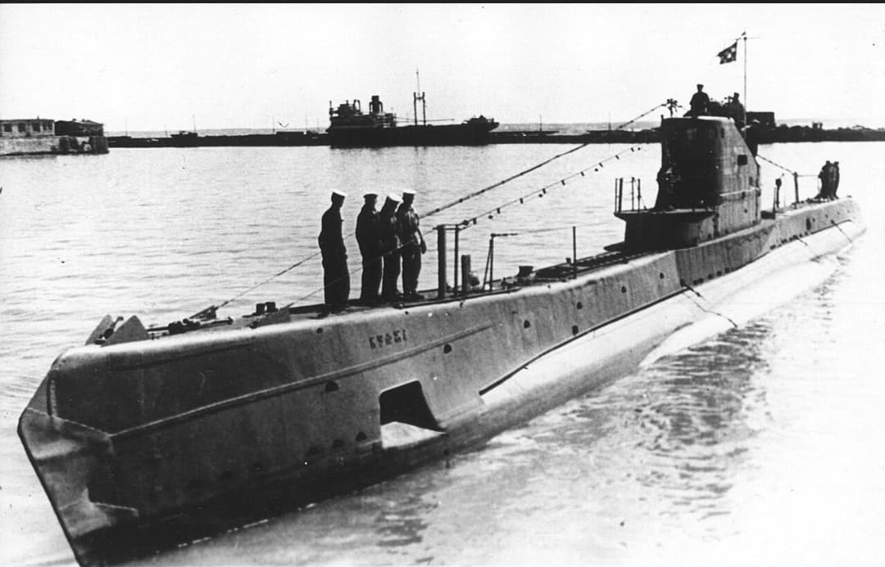
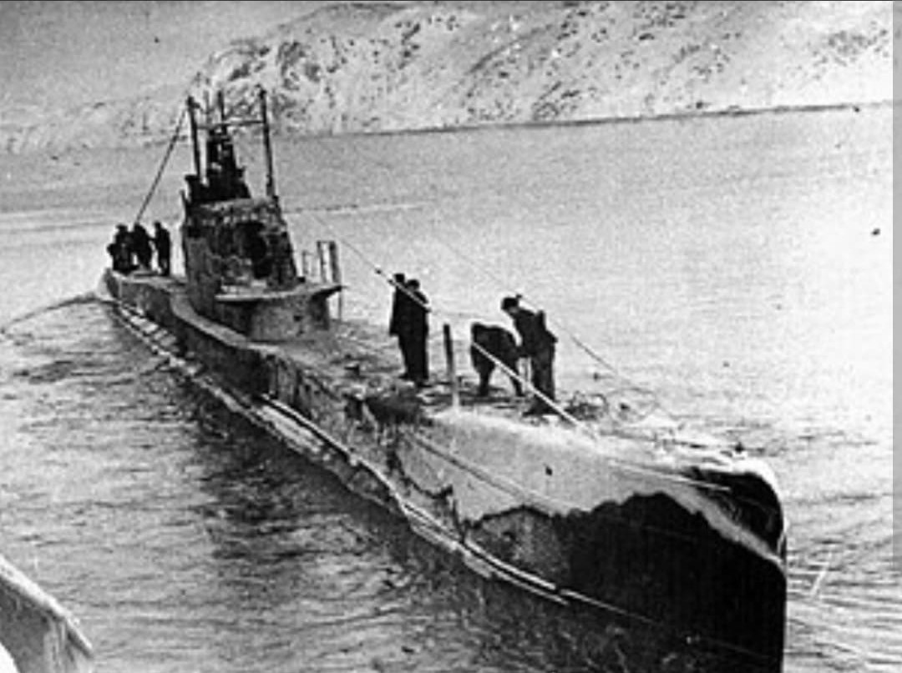
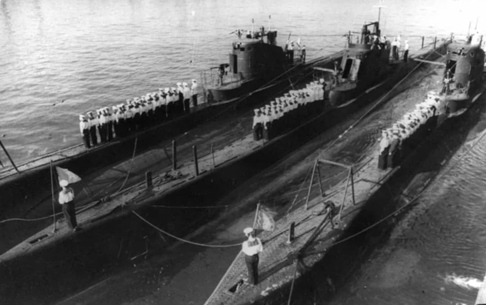

La colonne vertébrale de la flotte sous-marine de la Marine soviétique durant la Grande Guerre patriotique

La **classe Shchuka** (du russe Щука signifiant « Brochet », également désignée **classe Shch** ou *Type V, X, X-bis*) constitue la classe de sous-marins moyens la plus nombreuse de la Marine soviétique durant la Seconde Guerre mondiale.
Conçus à la fin des années 1920 et construits à plus de 80 exemplaires, ces sous-marins ont été engagés sur l'ensemble des théâtres maritimes soviétiques : en mer Baltique, en mer Noire, dans l'Océan Arctique (Flotte du Nord) et dans l'Océan Pacifique.
Développée par le bureau d'études navales dirigé par l'ingénieur Boris Malinine, la classe Shchuka a été pensée pour être économique, rapide à fabriquer et facile à manœuvrer dans des mers intérieures ou côtières fermées.
Fabriqués avec une coque double partielle, ces bâtiments offraient une bonne manœuvrabilité et un temps de plongée rapide (environ 35 à 40 secondes). Au fil des séries (du Type III au Type X-bis), leur structure fut améliorée, passant de l'assemblage riveté à l'assemblage soudé pour accroître la résistance de la coque à la pression et aux grenades de profondeur.

Dès l'invasion allemande de juin 1941, les *Shchuka* prennent une part active aux opérations navales. En **mer Baltique**, ils affrontent les champs de mines denses allemands et finnois (barrage de Porkkala) et les patrouilleurs de la Kriegsmarine pour intercepter le trafic de minerai de fer suédois.
En **mer Noire** et dans l'**Arctique**, ils mènent de nombreuses attaques contre les convois de ravitaillement de l'Axe. Plusieurs unités se distinguent par des faits d'armes héroïques, à l'image du *Shch-402* ou du *Shch-421* commandé par le héros de l'Union soviétique Nikolaï Lounine, devenant des symboles de la résistance sous-marine soviétique.

Sur les **86 sous-marins** de la classe Shchuka construits, 35 ont été perdus au combat durant la Seconde Guerre mondiale, payant un lourd tribut face aux mines maritimes, au repérage aérien et aux forces de lutte anti-sous-marine ennemies.
Cependant, ils ont coulé ou endommagé des dizaines de navires de transport et bâtiments de guerre ennemis. Six sous-marins de cette classe ont reçu le titre prestigieux de la Garde soviétique (*Gvardeïskaïa*), consolidant la réputation du « Brochet » dans la mémoire navale soviétique.
Page du Musée HOP WW2 – Section Marine Soviétique